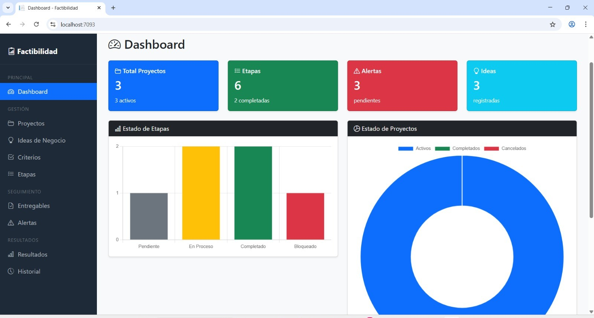

Descripción:
Este sistema permite gestionar y evaluar la factibilidad de proyectos mediante criterios como mercado, técnica, operativa y financiera. Se crean Etapas, entregables y Alertas, Facilita la toma de decisiones en organizaciones basado en la viabilidad del proyecto.
Curso: Ingeniería de Software II
Tecnologías utilizadas: